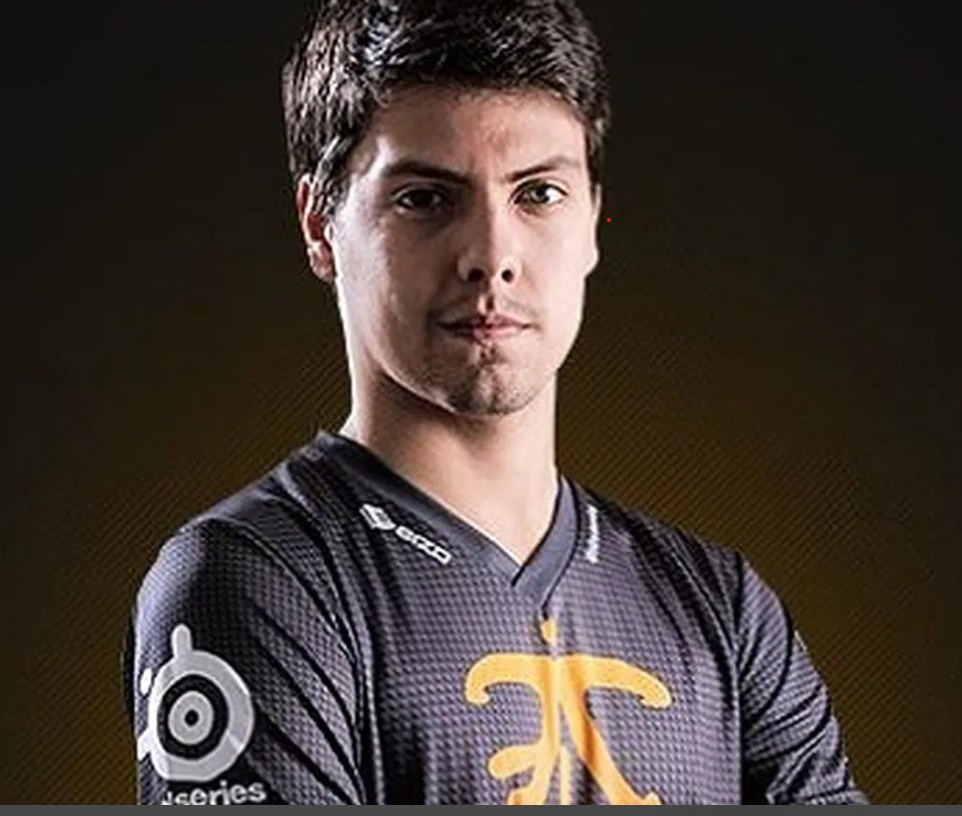

Luis Tobera Noval
Summoner's name: wavivu eternal

Summary
Jugador apasionado de "League of Legends" con habilidades destacadas en las posiciones de Jungla y Support. Con un enfoque estratégico y una amplia variedad de campeones en mi arsenal, busco mejorar continuamente y enfrentar nuevos desafíos en la Grieta del Invocador.
Si quieres te lo digo en verso:
En la Grieta del Invocador yo me hallo,
Jugador apasionado, sin respiro ni fallo.
"League of Legends" es mi fiel compañero,
En Jungla y Support, siempre soy el primero.
Estrategia en mente, con visión clara y real,
Campeones en arsenal, listos para el final.
Busco mejorar, cada día sin cesar,
Desafíos enfrento, listo para triunfar.
Education
-
Escuela de Estrategia de LoL
Curso avanzado de tácticas de juego, 2018-2019
-
Taller de Jungla y Support
Instituto de Maestría en Roles, 2017-2018
Game Experience
Jungla en Team Rift Masters
2020 - Presente
- Especialización en campeones como Fiddlesticks, Lee Sin y Graves.
- Participación activa en estrategias de equipo y control de objetivos.
Support en Summoners United
2018 - 2020
- Maestría en campeones como Bardo y Vel'koz.
- Enfoque en visionado y control del mapa.
Skills
-
Campeones principales:
- Fiddlesticks ⭐⭐⭐⭐⭐⭐
- Bardo ⭐⭐⭐⭐⭐
- Sylas ⭐⭐⭐⭐
- Graves⭐⭐⭐⭐
- Adaptabilidad a diferentes composiciones de equipo.
- Estrategias de visionado y control de objetivos.
- Comunicación efefctiva y toma de decisiones en tiempo real.
Awards
- Ascenso dorado - Logro por alcanzar el rango Gold II
- Maestro de la Victoria - Reconocimiento por mantener un 60% de WinRate
- Desafío sin Toplaner - Logro por ganar el 50% de las partidas sin un toplaner
Other
© 2023 Luis Tobera. Todos los derechos reservados.